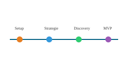

Setup
Zeitraum: Februar
- Kickoff des Projekts.
- Technisches Setup der Infrastruktur.

GeoHist wird schrittweise entwickelt – von Setup und Strategie über Discovery-Phase bis hin zum Minimal Viable Product (MVP) und weiteren Ausbaustufen.
Zeitraum: Februar
Zeitraum: März
Zeitraum: April – August
Zeitraum: bis Q1 2026